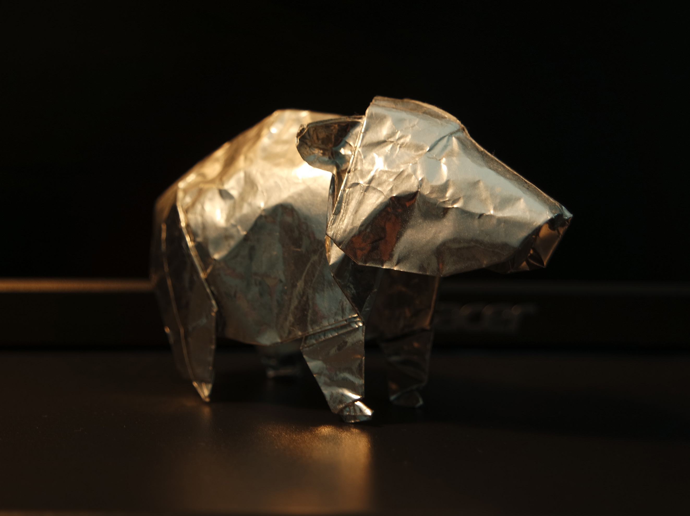
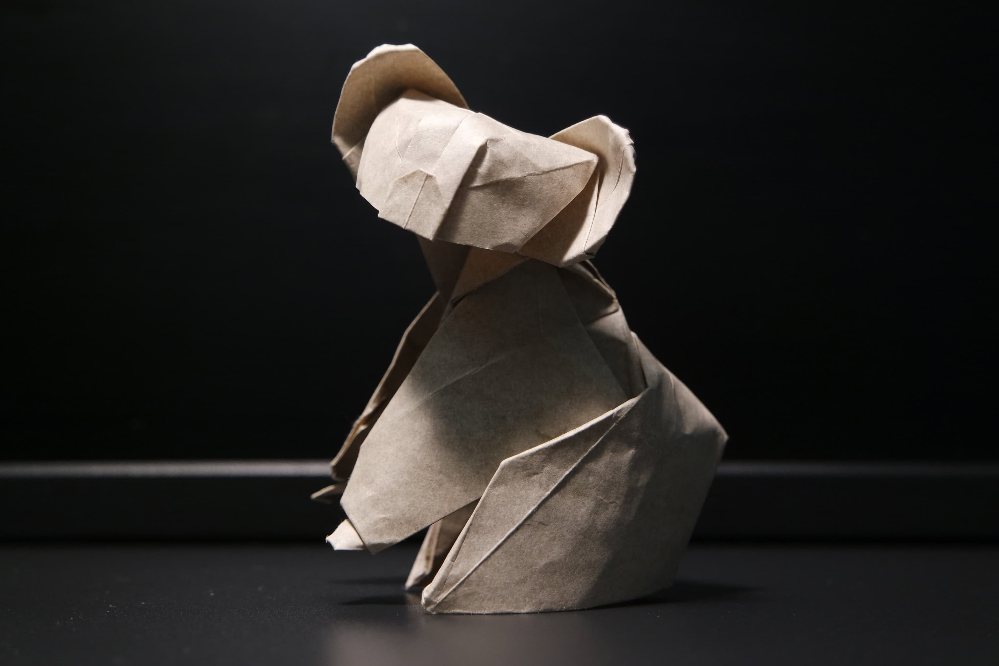
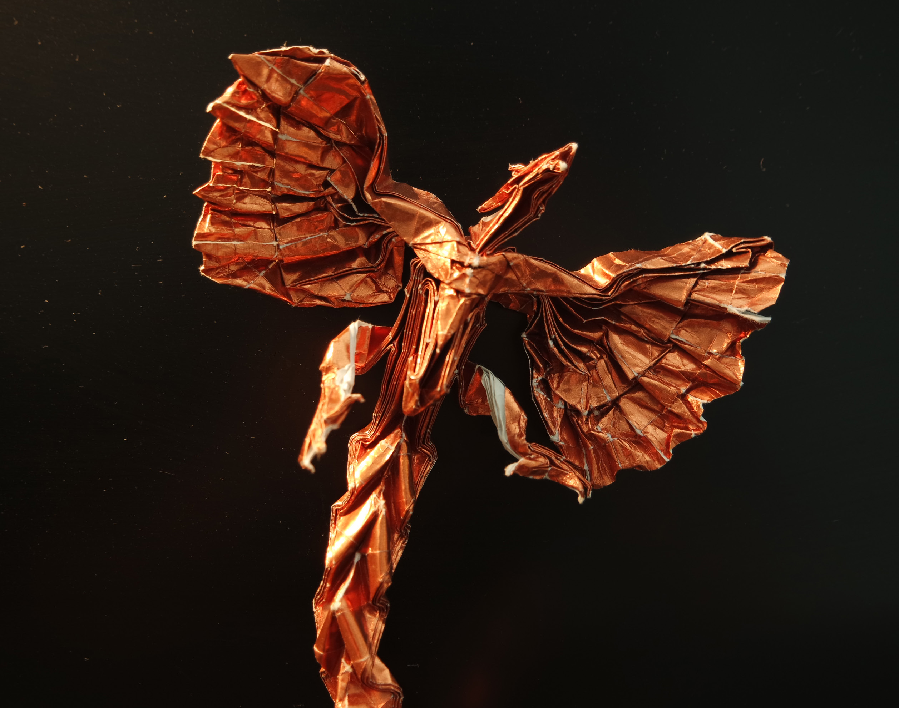
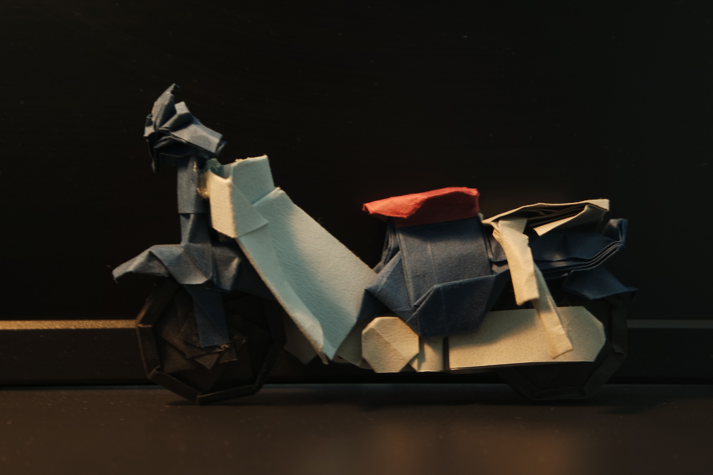
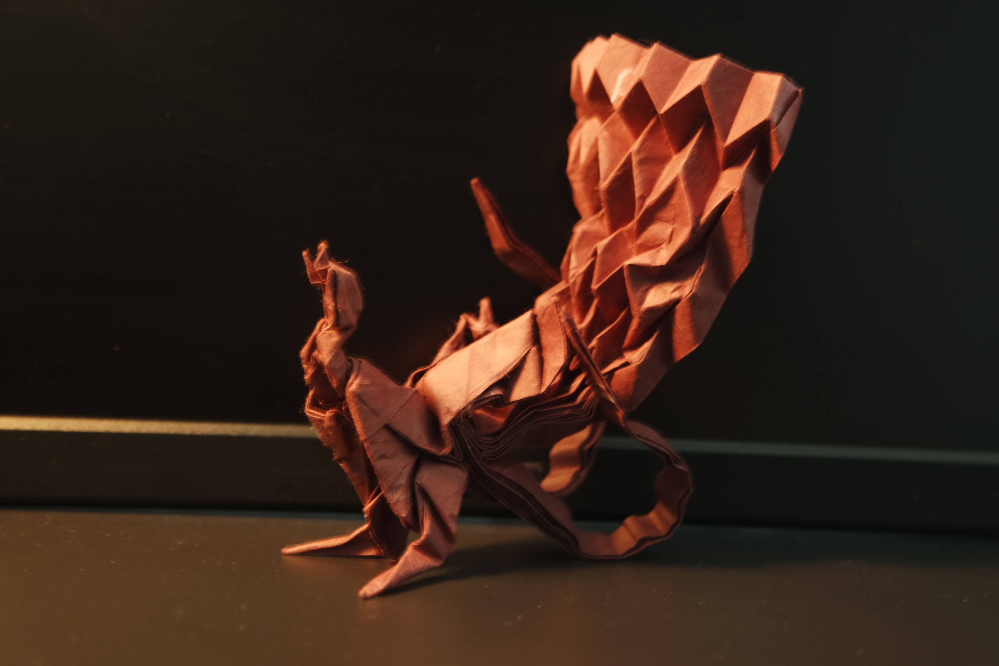
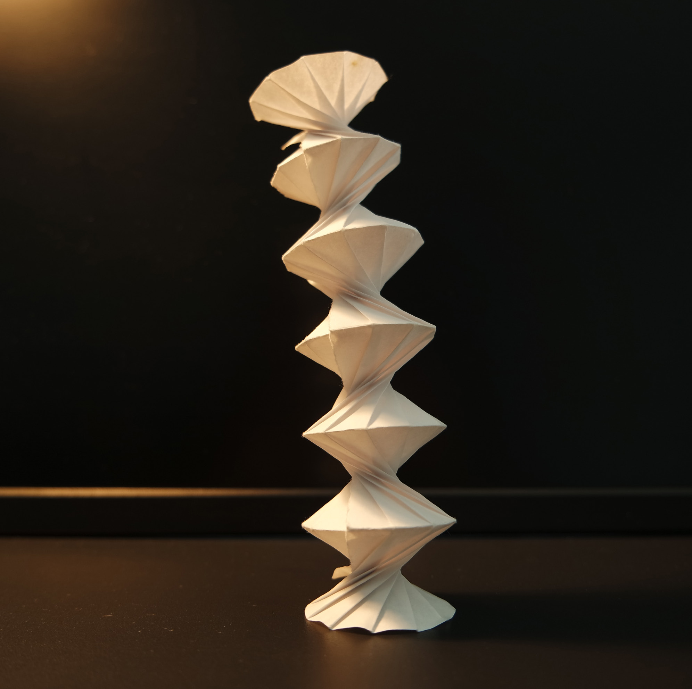
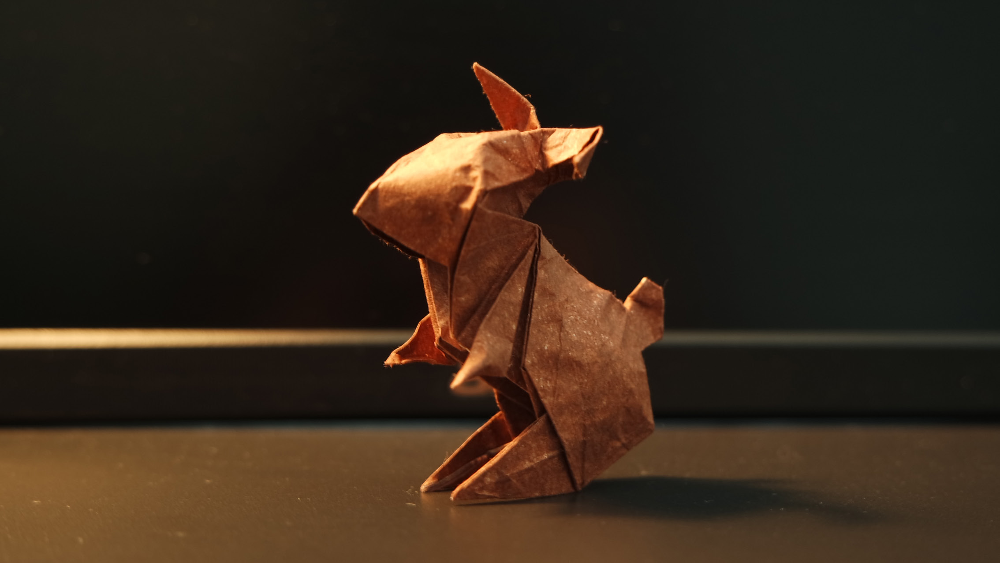

Enlarge ↗
Japanese Maple Leaf
6″ × 6″
Tissue Foil
A planar composition emphasizing vein structure, symmetry, and the geometric logic of botanical form.
Selected Work
A portfolio of origami models folded over the past several years, featuring designs by Satoshi Kamiya, Robert Lang, Beth Johnson, Naomiki Sato, Chris Palmer, Jeff Beynon, and Jun Maekawa.
A planar composition emphasizing vein structure, symmetry, and the geometric logic of botanical form.

Enlarge ↗A compact form defined by rounded shaping and subtle layering, capturing the natural posture and volume through geometric planning and circle-packing.

Enlarge ↗Broad pleats and compressed layers define a soft, simplified figure that relies on curvature and abstract shaping rather than a structured box-pleat.

Enlarge ↗A complex figure with extended wings and tail, showcasing multi-layered folding and anatomical logic. The folds erupt from the midpoint of the paper to symbolize the rebirth of a phoenix.
Constructed from a pentagonal base, the spiral layering creates a floral form with curved folds.

Enlarge ↗A multipart assembly that translates mechanical complexity into fold-based articulation and structural precision.
A radial-creased dome exploring symmetry and spatial volume through repetitive patterning.

Enlarge ↗A slender composition with extended tail structures and balanced stance, demonstrating refined proportion and fold economy.

Enlarge ↗A continuous helical structure expressing curvature, compression, and release through controlled tension along a single axis.

Enlarge ↗A geometric study in proportion, using angled folds to define posture and balance.